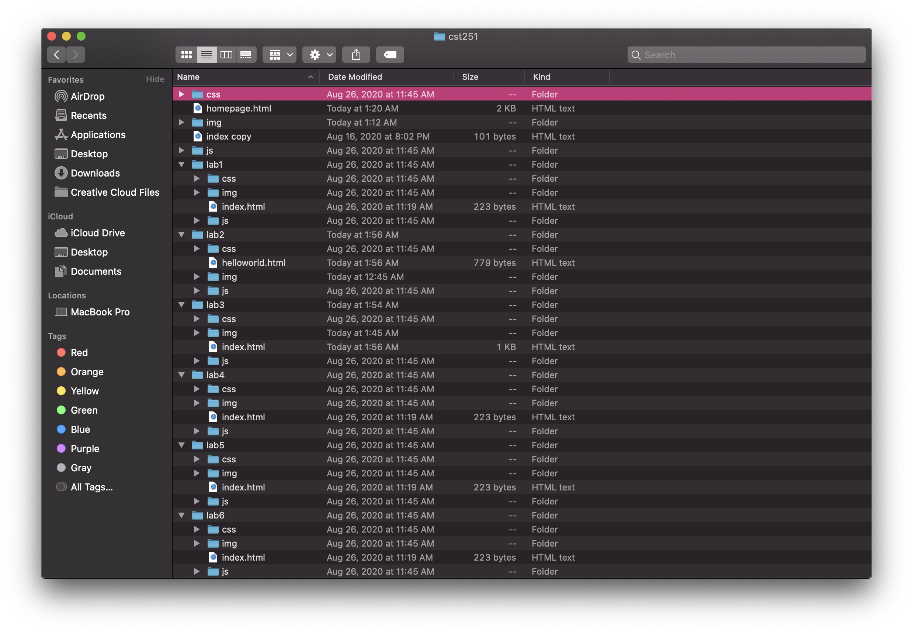
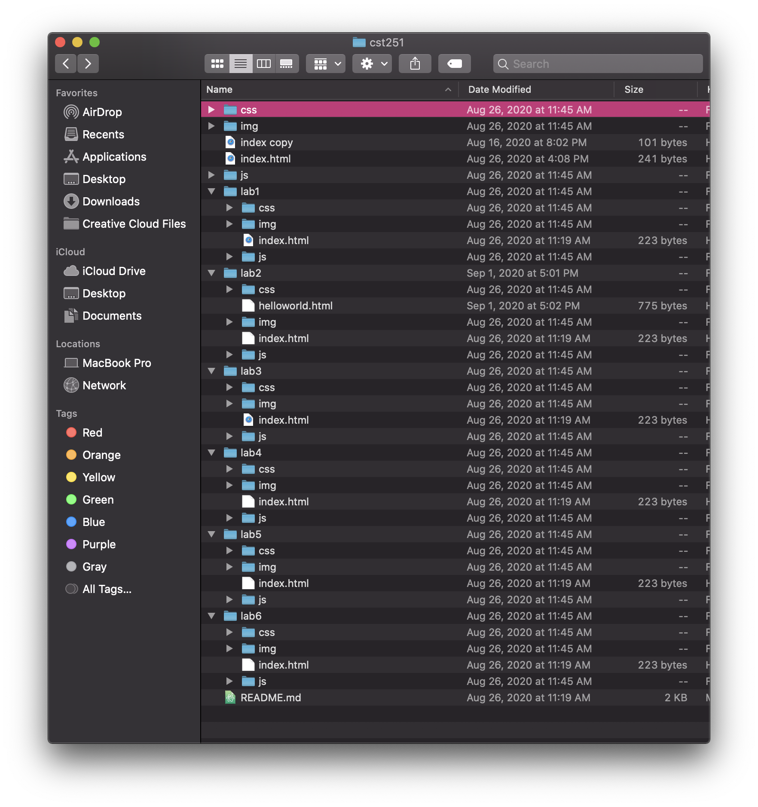
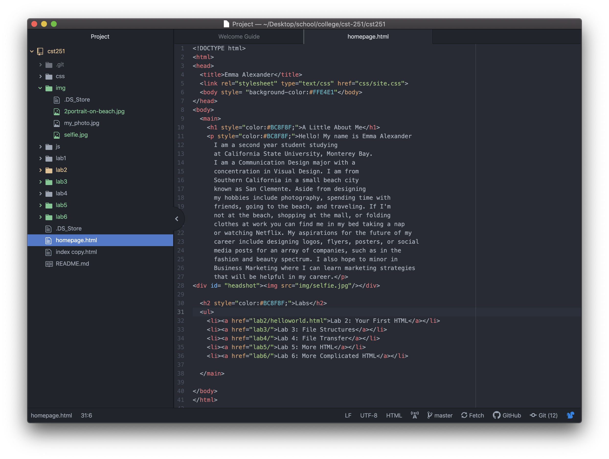
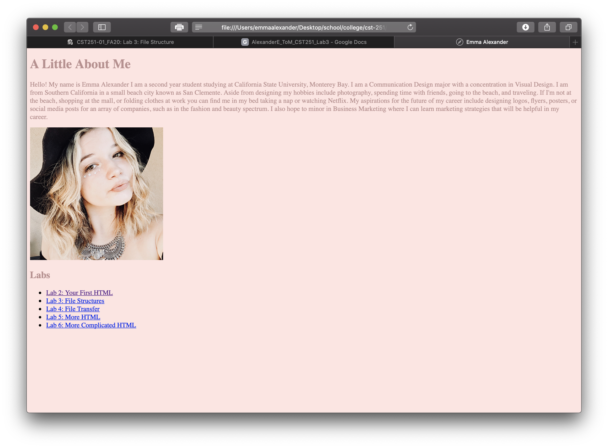
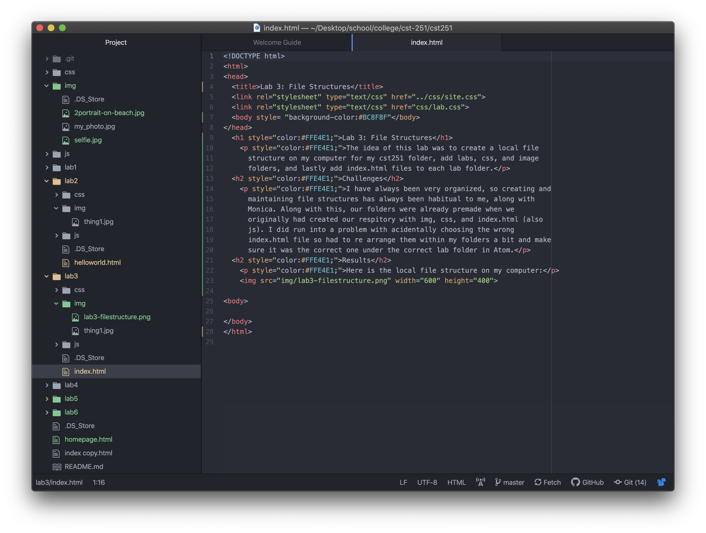
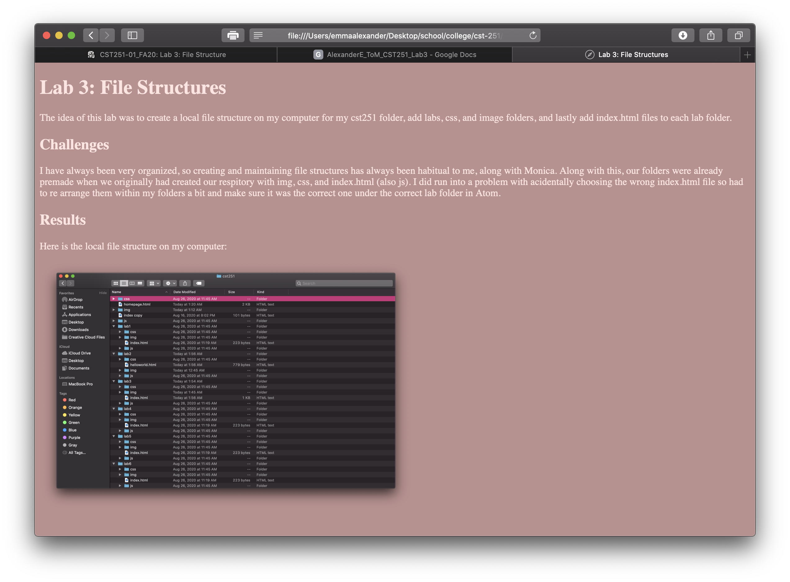

<!DOCTYPE html>
<html>
<head>
    <title>Lab 3: File Structures</title>
    <link rel="stylesheet" type="text/css" href="css/lab.css"
</head>
</html>

    <div id="content">
<br>
  <h1>LAB THREE: FILE STRUCTURES</h1>
<br>
    <div id="purpose">
	<h1>PURPOSE</h1>
	     <p>The idea of this lab was to create a local file
	 			structure on my computer for my cst251 folder, add labs, css, and image
	 			folders, and lastly add index.html files to each lab folder.</p>
    </div>
<br>
<br>
    <div id="challenges">
  <h1>CHALLENGES</h1>
			 <p>I have always been very organized, so creating and
	 			maintaining file structures has always been habitual to me, along with
	 			Monica. Along with this, our folders were already premade when we
	 			originally had created our respiratory with img, css, and index.html (also
	 			js). I did run into a	problem with acidentally choosing the wrong
	 			index.html file so had to re arrange them within my folders a bit and make
	 			sure it was the correct one under the correct lab folder in Atom.</p>
     </div>
<br>
<br>
    <div id="results">
	<h1>RESULTS</h1>
	<h3>Here is the local file structure on my computer:</h3>
			
    </div>
<br>
<br>

<h2>Screenshots:</h2>


<p>Task 1: Create a Local File Structure</p>

<p>Task 2: Homepage HTML on Atom</p>

<p>Task 2: Homepage Online</p>

<p>Task 3: Lab 3 HTML Atom</p>

<p>Task 3: Lab 3 Online</p>

<br>
<br>
<a href="../index.html">back to my homepage</a>
<br>
<br>
<br>
